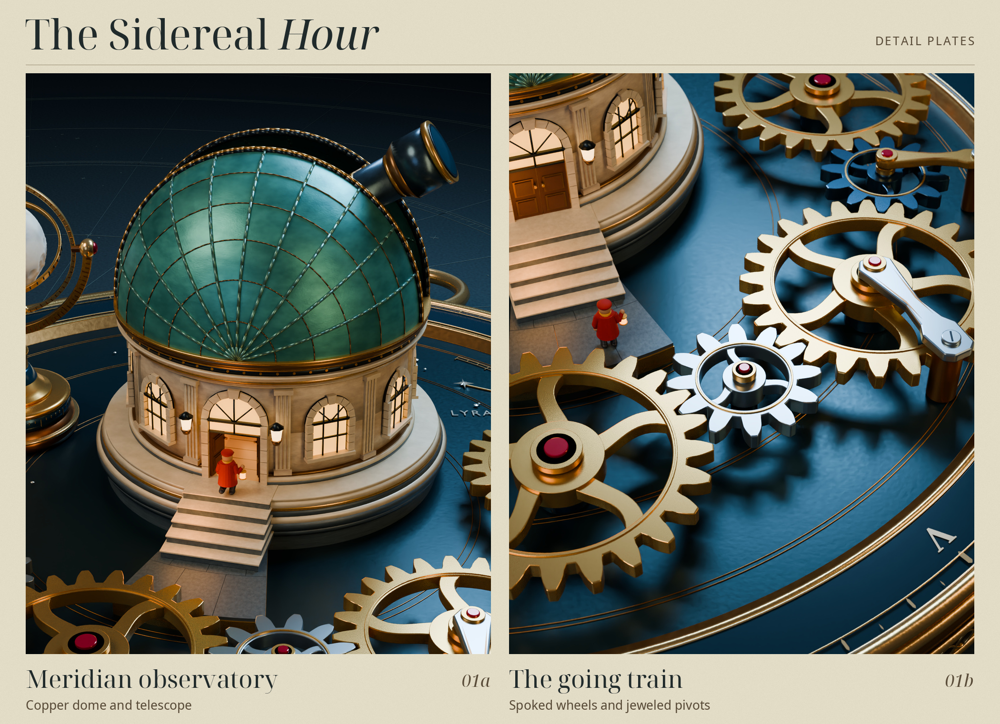
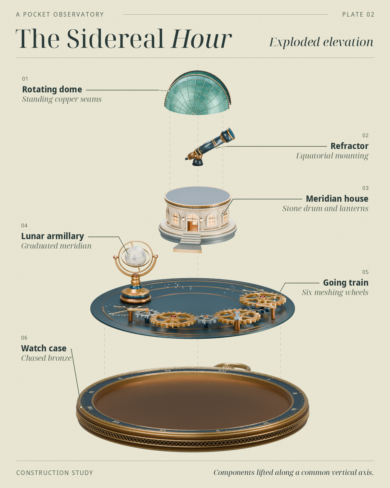
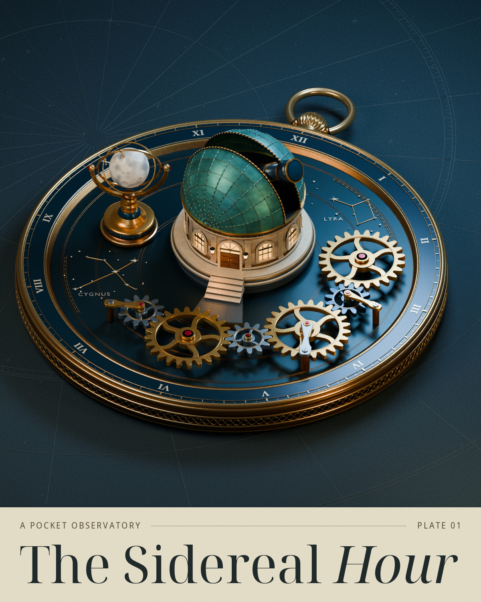

A short film in Blender
The Sidereal Hour
A lantern keeper, a copper dome and a train of turning gears share the dial of a pocket watch.

The print plates
Open a plate to see it at full resolution.






A short film in Blender
A lantern keeper, a copper dome and a train of turning gears share the dial of a pocket watch.
Open a plate to see it at full resolution.


